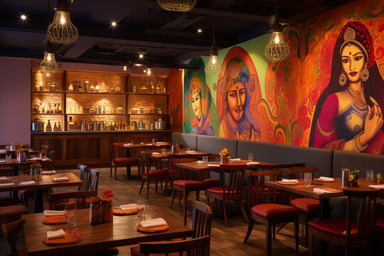
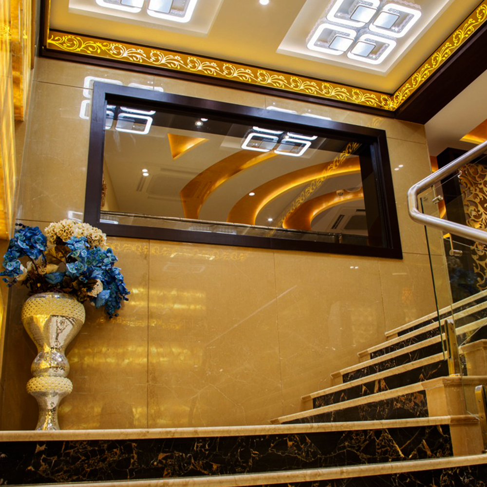

Welcome To
Indian Antique Restaurant
Indian Antique Restaurant has been serving delightful experiences through the art of cooking for four decades. A cozy, relaxing space combined with flavourful dishes makes it a first choice for every foodie in town. It provides a wide range of items to choose from and lets everyone indulge in an experience of pleasing their taste buds.
We provide a wide range of cuisines and dishes to choose from so that every foodie in town has their best experience here.
We are known to be the best Mughlai eatery in Kolkata. We have always won the hearts of our customers with appetizing dishes and friendly behaviour. It is the best choice for everyone who wants to enjoy the best.

